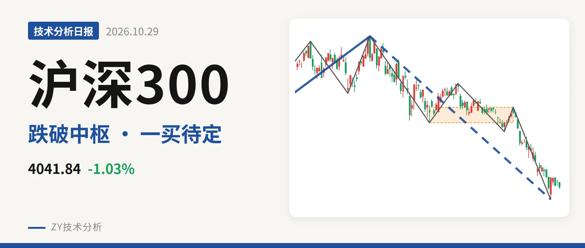
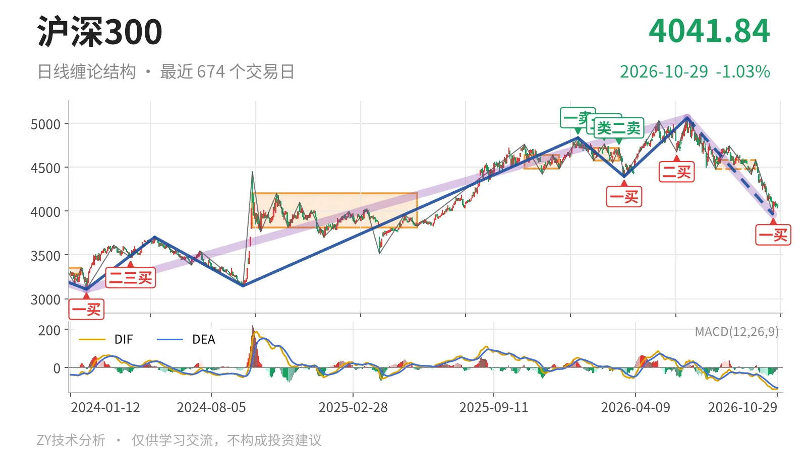
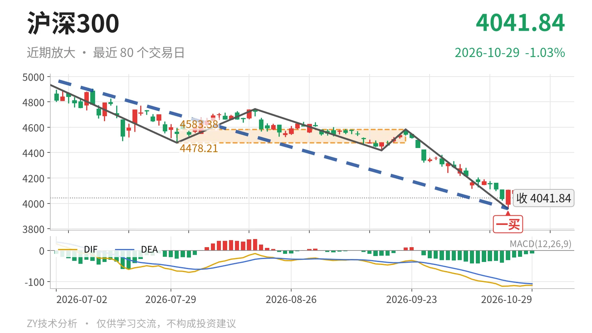

沪深300｜跌破4478中枢，一买未成笔

最近日线中枢 4478.21—4583.38点，收盘位于中枢之下
一句话：大级别上涨未坏，短线跌破最近中枢，一买后未成笔
🧭 走势结构：大级别上涨没坏，6月23日以来下跌还在延续
沪深300当前仍处在2024年2月2日至2026年6月23日的上涨段内，这段从3108.35点涨至5064.27点、上涨约63%，还没有结束。6月23日至10月23日的下跌段跌约21.8%，同样没有结束；日线线段上，这段下跌已内含5笔。此前2021年2月18日至2024年2月2日的下跌段已经结束。因此，当前不是独立熊市，而是大级别上涨中的深幅回落段。

📍 中枢与位置：价格跌破最近中枢，但仍在大中枢内
最新收盘4041.84点已跌破7月30日至9月22日中枢（4478.21—4583.38点）下沿，低于下沿约9.7%。日线笔中枢位置在逐级下移：2025年10月30日至2025年12月16日为4484.27—4640.63点，2月3日至3月17日为4578.21—4720.86点，7月30日至9月22日为4478.21—4583.38点。但4041.84点仍位于2024年10月8日至2025年5月30日的大中枢3812.32—4200.91点内部，略高于中轴4006.61点。跌破小中枢、守住大中枢，是当前最明显的结构特征。
📉 买卖点：卖点逐级降低，10月23日一买后反弹未成笔
日线笔级别上，1月13日一卖4836.95点、2月25日二卖4766.56点、3月17日类二卖4720.86点，卖点一个比一个低。3月24日一买4394.29点、6月8日二买4677.57点之后，10月23日又出现一买3958.14点。截至10月29日，该一买后只有4根K线，最高4110.00点、最低4030.23点，尚未构成新的一笔。

🧮 背驰与MACD：下跌未现新低不新弱，DIF仍在零轴下
围绕10月23日一买看，最近一组下跌笔力度并不弱。8月18日至9月16日下跌笔绿柱面积103、DIF低点-44.8；9月22日至10月23日下跌笔绿柱面积494、DIF低点-115.1。价格创出3958.14点新低，同时绿柱面积与DIF低点同步放大，没有出现新低不新弱。最新MACD方面，DIF为-112.2、DEA为-107.2，柱值为-10.0，DIF在零轴之下，日线空头仍未扭转。10月23日一买后的反弹还弱，未成笔前难言转强。
🔎 关键位置观察：反抽看4478点，破位看3812点
当前结构偏弱，弱在价格位于最近中枢下方且反弹没有成笔。若10月23日一买后的反弹成笔后仍不能回到4478点上方，则对7月30日至9月22日中枢构成三卖，6月23日以来的下跌段会延续。若重新站上4478点，则回落更可能只是中枢扩展，短线下移压力减轻。下方3812点附近是2024年10月8日至2025年5月30日中枢下沿，一旦失守，大级别上涨结构才会明显转坏。
⚠️ 本文为基于公开行情数据的缠论技术结构记录，由程序自动计算并生成，仅供学习交流，不构成任何投资建议。市场有风险，投资需谨慎。